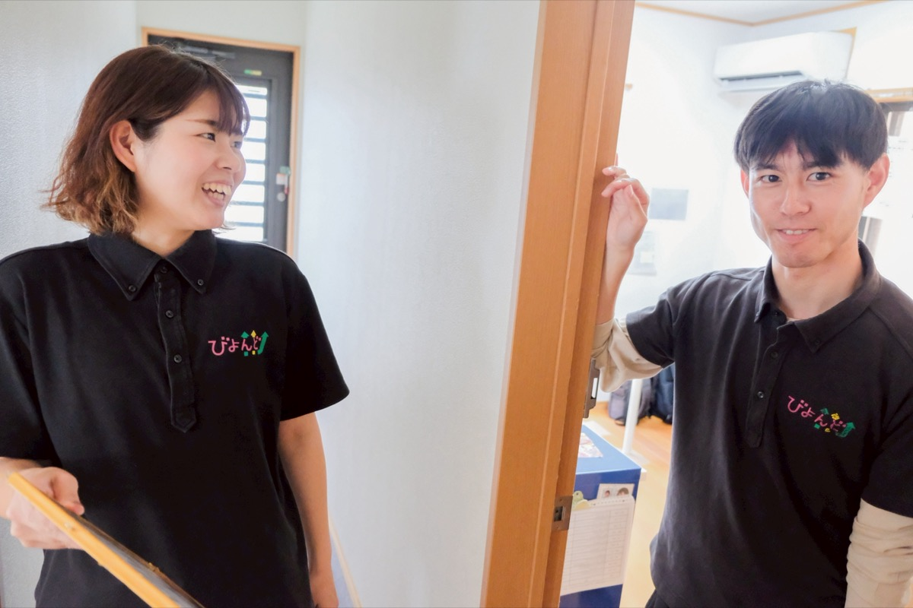

Grow your
own color.
own color.
一本の木から、多色を。
訪問介護・放課後等デイサービス・相談支援。
未経験からでも、資格を取りながら。あなたらしい色で、地域の暮らしを支える仕事をはじめませんか。
SCROLL

Career Path
キャリアパス
01
入社・同行訪問
未経験の方は研修生・パートからスタート。先輩と一緒に現場を学びます。
02
資格取得
休日の研修にはバイト代を支給。費用ゼロで資格が取れます。
03
正社員へ
6か月の勤務を経て、面談のうえ正社員へ。短時間社員（契約社員）という選択肢も。
04
サービス提供責任者
入社1年半〜2年でサ責になったスタッフもいます。
05
管理者・児発管・サビ管
事業所の運営やスタッフ育成を担います。
Data
データで見るNewValley
設立
2016年
神奈川・東京で展開
事業所数
5事業所
大和市・町田市ほか
直近1年の入社人数
14人
訪問介護部門
賞与
年2回
昨年実績 2〜3ヶ月分（訪問介護）
有給消化率
80%以上
休みも大切に
希望休の取得率
100%
訪問介護部門
Message
代表メッセージ
年齢も、経験も、国籍も。
ちがう色が集まるから、
強い木になる。
株式会社NewValleyは「一本の木から多色」を理念に、年齢・性別・国籍・経験にかかわらず、多様な人材が自分らしく活躍できる環境づくりを進めています。
代表取締役新谷 誠